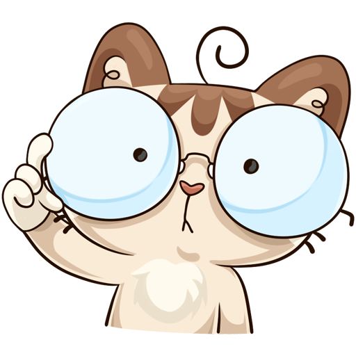

Всесвітня павутина World Wide Web виткана з Web-сторінок, які створюються за допомогою так званої мови розмітки гіпертексту
HTML (Hyper Text Markup Language). Хоча багато хто говорить про програмування цією мовою, HTML зовсім не є мовою програмування в традиційному розумінні.
HTML - мова розмітки документа. При розробці HTML-документа виконується розмітка текстового документа, ці позначки служать для вказівки форми представлення
інформації, що міститься в документі.
Мова HTML дозволяє:
1) Створювати і редагувати Web-сторінки, зокрема свою домашню Web-сторінку, яку можна потім розмістити в Інтернеті;
2) Редагувати документи HTML, отримані з Інтернету, так щоб функціонували всі впроваджені в документ об'єкти (картинки, анімації і т.д.);
3) Створювати мультимедійні презентації, слайд-шоу, демонстраційні проекти, завдяки гіпертекстовим посиланням і можливості вставляти в документ HTML
малюнки, діаграми, анімації, відеокліпи, музичний і мовний супровід, текстові спецефекти (наприклад, рядок, що біжить).
Розглянемо основні поняття мови HTML.

1. Елемент - це конструкція мови HTML, або контейнер, що містить дані. Web-сторінка є набором елементів.
2. Тег - це стартовий і кінцевий маркери елементу. Теги визначають межі дії елементів і відокремлюють елементи один від одного. У тексті Web-сторінки теги полягають в кутові дужки. Кінцевий тег завжди забезпечується косою межею.
3. Гіперпосилання - фрагмент тексту, який є покажчиком на інший файл або об'єкт. Гіперпосилання дозволяють переходити від одного документа до іншого.
4. Фрейм - область гіпертекстового документа з своїми смугами прокрутки.
5. Аплет - програма, передавана на комп'ютер клієнта у вигляді окремого файлу і що запускається при прогляданні Web-сторінки.
6. Скрипт - програма, включена до складу Web-сторінки для розширення її можливостей.
7. Завантаження (DownLoad) - копіювання документа з Web-сервера на комп'ютер клієнта.
Більше інформації про роботу з мовою HTML: http://htmlbook.ru
Почта студента, що виконав лабораторну роботу: 5734290@stud.nau.edu.ua